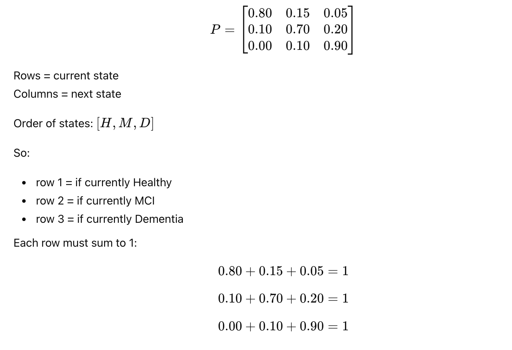
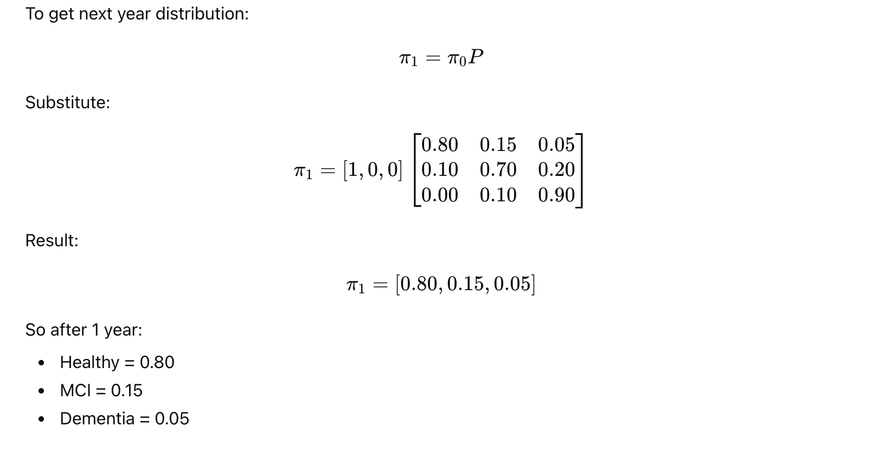
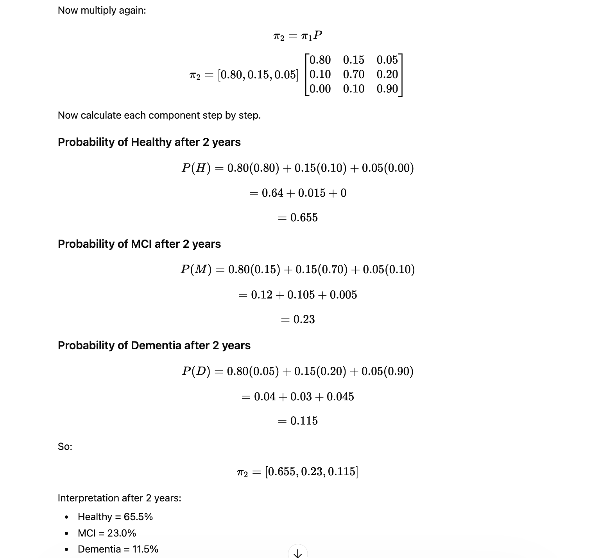
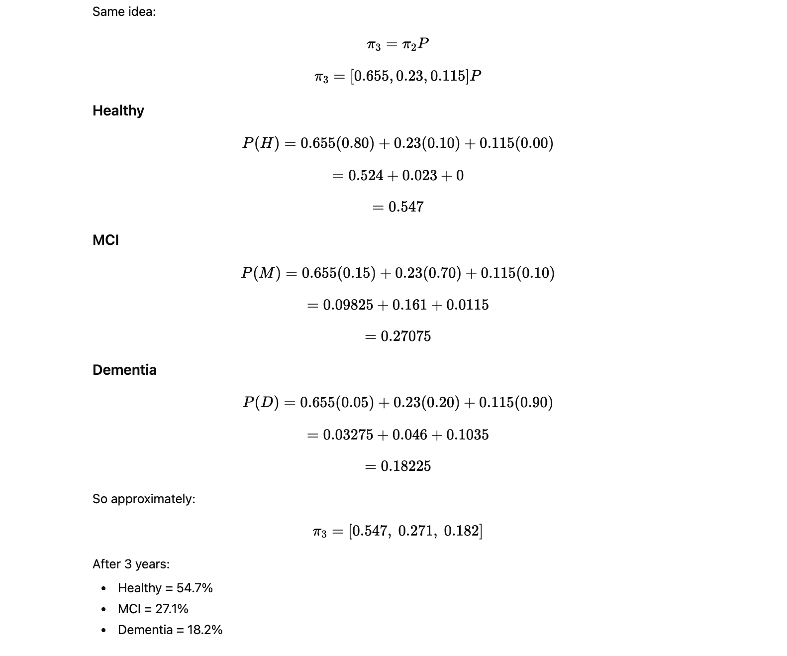
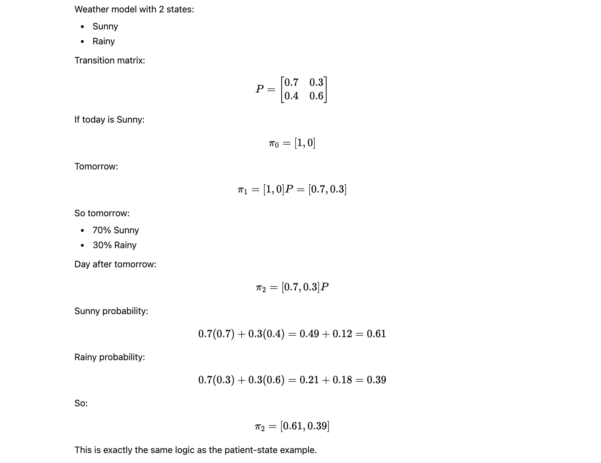

What is Markov?¶
Markov model is a way to model a system that moves between states over time, where the next state depends only on the current state, not the full past.
This is called the Markov property.
If a patient is in state St today, then the probability of tomorrow’s state St+1 depends only on St.
Formula:
Meaning:
- future depends on present
- future does not directly depend on full history
2) Real example
Take a simple neuro health progression model with 3 states:
H= HealthyM= Mild Cognitive ImpairmentD= Dementia
Suppose each year a patient can move between these states with these probabilities:
-
If Healthy now:
- stay Healthy = 0.80
- move to MCI = 0.15
- move to Dementia = 0.05
-
If MCI now:
- move back to Healthy = 0.10
- stay MCI = 0.70
- move to Dementia = 0.20
-
If Dementia now:
- move to Healthy = 0.00
- move to MCI = 0.10
- stay Dementia = 0.90
3) Transition matrix
These probabilities are written in a transition matrix P:

4) Initial state vector
Suppose today the patient is definitely Healthy.
Then initial state vector is:
π0 = [1,0,0]
Meaning:
- 100% Healthy
- 0% MCI
- 0% Dementia
5) After 1 year

6) After 2 years

7) After 3 years

8) What is happening conceptually
Each year:
- some Healthy patients remain Healthy
- some Healthy move to MCI
- some MCI progress to Dementia
- a small fraction of MCI may improve
The Markov model keeps repeating this transition logic step by step.
9) General formula
If initial state vector is π0, then after n time steps:
πn = π0Pn
Where:
π0 = initial distributionP = transition matrixPn = matrix multiplied by itself n times
10) Simple non-medical example

11) Why Markov is useful in Neuro Digital Twin
For a neuro digital twin, states can be:
- Normal
- At-risk
- MCI
- Moderate decline
- Severe decline
Then transitions depend on things like:
- age
- MRI findings
- MMSE/MoCA
- sleep
- BP
- glucose
- genetics
- medications
12) Important limitation
Basic Markov assumes:
- next state depends only on current state
- transition probabilities are fixed
But real patients are more complex. So in practice people use:
- time-inhomogeneous Markov models: probabilities change over time
- hidden Markov models: true disease state is hidden
- Markov + Monte Carlo
- Markov + ML risk scores
13) Very short summary
A Markov model is:
- a set of states
- probabilities of moving from one state to another
- repeated over time
Main formulas:
14) Final practical intuition
Think like this:
- state = where patient is now
- transition probability = chance of moving to another state
- matrix multiplication = applying those chances repeatedly over time
That is Markov.
Markov-only model 5-year Neuro Digital Twin¶
1) Problem Setup
We define 4 neuro states:
0 = Stable1 = At Risk2 = Mild Cognitive Impairment (MCI)3 = Dementia
2) Markov-Only Model
Concept
A Markov model uses a transition matrix:
Example transition matrix
State order:
- Stable
- At Risk
- MCI
- Dementia
Interpretation:
- Stable patients mostly remain stable
- At Risk can improve or worsen
- MCI can worsen to Dementia
- Dementia is mostly persistent
Python code: 5-year Markov model
import numpy as np
import pandas as pd
# -----------------------------
# 1. Define states
# -----------------------------
states = ["Stable", "At Risk", "MCI", "Dementia"]
state_to_idx = {s: i for i, s in enumerate(states)}
# -----------------------------
# 2. Transition matrix
# Rows = current state
# Cols = next state
# -----------------------------
P = np.array([
[0.75, 0.20, 0.05, 0.00], # Stable ->
[0.10, 0.65, 0.20, 0.05], # At Risk ->
[0.00, 0.10, 0.65, 0.25], # MCI ->
[0.00, 0.00, 0.05, 0.95], # Dementia ->
], dtype=float)
# Safety check
row_sums = P.sum(axis=1)
if not np.allclose(row_sums, 1.0):
raise ValueError(f"Each row of transition matrix must sum to 1. Got: {row_sums}")
# -----------------------------
# 3. Initial patient state
# Suppose patient starts as Stable
# -----------------------------
pi0 = np.array([1.0, 0.0, 0.0, 0.0])
# -----------------------------
# 4. Simulate 5 years
# Formula:
# pi_(t+1) = pi_t @ P
# -----------------------------
years = 5
distributions = [pi0]
current = pi0.copy()
for year in range(1, years + 1):
current = current @ P
distributions.append(current)
# -----------------------------
# 5. Convert to DataFrame
# -----------------------------
df_markov = pd.DataFrame(distributions, columns=states)
df_markov.insert(0, "Year", range(0, years + 1))
print("5-Year Neuro Digital Twin (Markov-only) Distribution:")
print(df_markov.round(4))
# -----------------------------
# 6. Most likely state each year
# -----------------------------
df_markov["Most Likely State"] = df_markov[states].idxmax(axis=1)
print("\nMost likely state by year:")
print(df_markov[["Year", "Most Likely State"]])
Markov + Monte Carlo Combined Model¶
3) Markov + Monte Carlo Combined
Why combine Markov + Monte Carlo?
Markov alone gives expected probabilities.
Monte Carlo adds:
- randomness
- patient-to-patient variability
- uncertainty in transition behavior
So instead of only saying:
- Dementia probability after 5 years = 18%
we can simulate many possible patient paths.
Example paths:
Stable → Stable → At Risk → MCI → MCI → DementiaStable → Stable → Stable → At Risk → At Risk → MCI
Step 1: Markov gives transition probabilities
Example from Stable:
[0.75, 0.20, 0.05, 0.00]
Step 2: Monte Carlo samples one outcome
For a single patient-year, randomly choose the next state using those probabilities.
Step 3: Repeat across years
Do this for 5 years.
Step 4: Repeat across many runs
Run 1000 or 10000 simulated patient trajectories.
Then estimate:
- probability of ending in each state
- average time to MCI
- average time to Dementia
Python code: 5-year Markov + Monte Carlo¶
import numpy as np
import pandas as pd
# -----------------------------
# 1. Define states
# -----------------------------
states = ["Stable", "At Risk", "MCI", "Dementia"]
state_to_idx = {s: i for i, s in enumerate(states)}
idx_to_state = {i: s for i, s in enumerate(states)}
# -----------------------------
# 2. Base transition matrix
# -----------------------------
P_base = np.array([
[0.75, 0.20, 0.05, 0.00], # Stable ->
[0.10, 0.65, 0.20, 0.05], # At Risk ->
[0.00, 0.10, 0.65, 0.25], # MCI ->
[0.00, 0.00, 0.05, 0.95], # Dementia ->
], dtype=float)
if not np.allclose(P_base.sum(axis=1), 1.0):
raise ValueError("Each row in P_base must sum to 1.")
# -----------------------------
# 3. Patient-specific risk factors
# Example digital twin features
# -----------------------------
patient = {
"age": 67,
"apoe_e4": 1, # 1 = positive risk allele
"hypertension": 1, # 1 = yes
"poor_sleep": 1, # 1 = poor sleep
"exercise_good": 0, # 0 = not good
}
# -----------------------------
# 4. Risk adjustment function
# Increase progression risk for:
# - APOE e4
# - hypertension
# - poor sleep
# Decrease progression risk for exercise
# -----------------------------
def build_patient_transition_matrix(P, patient):
P_adj = P.copy()
risk_multiplier = 1.0
if patient["age"] >= 65:
risk_multiplier += 0.10
if patient["apoe_e4"] == 1:
risk_multiplier += 0.15
if patient["hypertension"] == 1:
risk_multiplier += 0.10
if patient["poor_sleep"] == 1:
risk_multiplier += 0.10
if patient["exercise_good"] == 1:
risk_multiplier -= 0.10
# Clamp to keep stable
risk_multiplier = max(0.8, min(risk_multiplier, 1.5))
# Increase worsening transitions:
# Stable->At Risk, Stable->MCI
# At Risk->MCI, At Risk->Dementia
# MCI->Dementia
worsening_pairs = [
(0, 1), (0, 2),
(1, 2), (1, 3),
(2, 3),
]
for i, j in worsening_pairs:
P_adj[i, j] *= risk_multiplier
# Rebalance diagonal so rows still sum to 1
for i in range(P_adj.shape[0]):
off_diag_sum = P_adj[i].sum() - P_adj[i, i]
P_adj[i, i] = max(0.0, 1.0 - off_diag_sum)
# If row sum drift occurs due to clipping, renormalize safely
row_sum = P_adj[i].sum()
if row_sum == 0:
P_adj[i, i] = 1.0
else:
P_adj[i] /= row_sum
return P_adj
P_patient = build_patient_transition_matrix(P_base, patient)
print("Patient-specific transition matrix:")
print(pd.DataFrame(P_patient, index=states, columns=states).round(4))
# -----------------------------
# 5. One Monte Carlo trajectory
# -----------------------------
def simulate_one_trajectory(P, start_state, years, rng):
current_state = start_state
trajectory = [current_state]
for _ in range(years):
probs = P[current_state]
next_state = rng.choice(len(states), p=probs)
trajectory.append(next_state)
current_state = next_state
return trajectory
# -----------------------------
# 6. Simulate many trajectories
# -----------------------------
def simulate_many_trajectories(P, start_state, years, n_runs=1000, seed=42):
rng = np.random.default_rng(seed)
all_trajectories = []
for _ in range(n_runs):
traj = simulate_one_trajectory(P, start_state, years, rng)
all_trajectories.append(traj)
return np.array(all_trajectories)
years = 5
n_runs = 5000
start_state = state_to_idx["Stable"]
trajectories = simulate_many_trajectories(
P=P_patient,
start_state=start_state,
years=years,
n_runs=n_runs,
seed=42
)
# -----------------------------
# 7. Distribution at each year
# -----------------------------
results = []
for year in range(years + 1):
year_states = trajectories[:, year]
counts = np.bincount(year_states, minlength=len(states))
probs = counts / n_runs
row = {"Year": year}
for i, state in enumerate(states):
row[state] = probs[i]
results.append(row)
df_mc = pd.DataFrame(results)
print("\n5-Year Neuro Digital Twin (Markov + Monte Carlo) Distribution:")
print(df_mc.round(4))
# -----------------------------
# 8. Example sample trajectories
# -----------------------------
sample_trajs = trajectories[:10]
pretty = []
for i, traj in enumerate(sample_trajs, start=1):
pretty.append({
"Run": i,
"Trajectory": " -> ".join(idx_to_state[s] for s in traj)
})
df_sample = pd.DataFrame(pretty)
print("\nSample simulated patient trajectories:")
print(df_sample.to_string(index=False))
# -----------------------------
# 9. Probability of reaching MCI or Dementia by year 5
# -----------------------------
final_states = trajectories[:, -1]
prob_mci_or_worse = np.mean(np.isin(final_states, [state_to_idx["MCI"], state_to_idx["Dementia"]]))
prob_dementia = np.mean(final_states == state_to_idx["Dementia"])
print(f"\nProbability of MCI or worse at Year 5: {prob_mci_or_worse:.4f}")
print(f"Probability of Dementia at Year 5: {prob_dementia:.4f}")
# -----------------------------
# 10. First year reaching MCI
# -----------------------------
def first_reaching_year(trajectory, target_states):
for year, state in enumerate(trajectory):
if state in target_states:
return year
return None
mci_years = []
for traj in trajectories:
y = first_reaching_year(traj, {state_to_idx["MCI"], state_to_idx["Dementia"]})
if y is not None:
mci_years.append(y)
if mci_years:
avg_year_to_mci = np.mean(mci_years)
print(f"Average first year reaching MCI or worse: {avg_year_to_mci:.2f}")
else:
print("No trajectory reached MCI or worse.")
4) What Markov + Monte Carlo is doing mathematically
For one patient at year t, if current state is i, then the next state is sampled from:
St+1 ∼ Categorical(Pi,:)
Where:
Pi,:is the row of probabilities for current state i
For example, if patient is At Risk and row is: [0.10,0.65,0.20,0.05]
then next year is randomly drawn from:
- Stable with probability 0.10
- At Risk with probability 0.65
- MCI with probability 0.20
- Dementia with probability 0.05
Running this many times approximates the full probability distribution.
5) Difference between the two approaches
A) Markov-only
Uses matrix multiplication: πt+1 = πtP
Output: - smooth probability distribution - deterministic result
B) Markov + Monte Carlo
Uses random sampling: St+1 ∼ Categorical(PSt,:)
Output:
- many possible patient paths
- uncertainty and trajectory variation
- closer to real-world simulation
7) Better clinical extension
You can improve this model by making probabilities dynamic.
Example:
p(MCI→Dementia) = base+α1(Age) + α2(APOE) + α3(Atrophy) + α4(Poor Sleep)
Example code idea:
progression_risk = (
0.25
+ 0.01 * max(patient["age"] - 60, 0)
+ 0.10 * patient["apoe_e4"]
+ 0.05 * patient["hypertension"]
)
Then clip and renormalize row probabilities.
8) Which one should you use?
Use Markov-only when:
- you want simple explanation
- you want average expected progression
- you want fast deterministic outputs
Use Markov + Monte Carlo when:
- you want realistic patient trajectories
- you want uncertainty bands
- you want simulation for digital twin
- you want risk distribution, not one number
For Neuro Digital Twin, Markov + Monte Carlo is better.